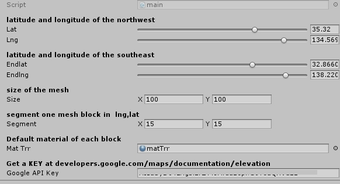

sakuSakuDoNotHappy
 new NS can fix ╮ (●’◡’●)ﾉ 
<!DOCTYPE HTML PUBLIC "-//W3C//DTD HTML 4.01 Transitional//EN" "http://www.w3.org/TR/html4/loose.dtd">
<html>
 <head>
  <title>About make terrain with elevationt </title>
  <meta name="Generator" content="EditPlus">
  <meta name="Author" content="">
  <meta name="Keywords" content="">
  <meta name="Description" content="">
 </head>


		
 <body  style="background-color:  #000000">
 <p>
   
   <div id="" class="" style="border: 3px color: #00ff33 ">
	<font size="" color="#ffffff">
		Type the latitude and longitude of the northwest point.
		<br>
		And the latitude and longitude of the southeast point.
		<br>
		the map will flip if you type in a wrong order.
		</font>
   </div>
 </body>
</html>

         